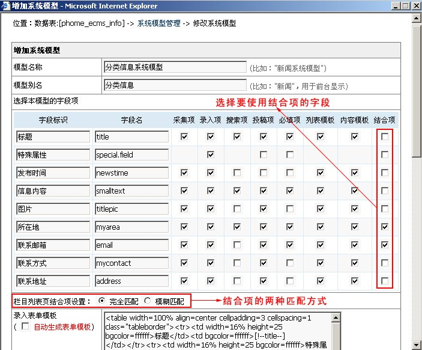
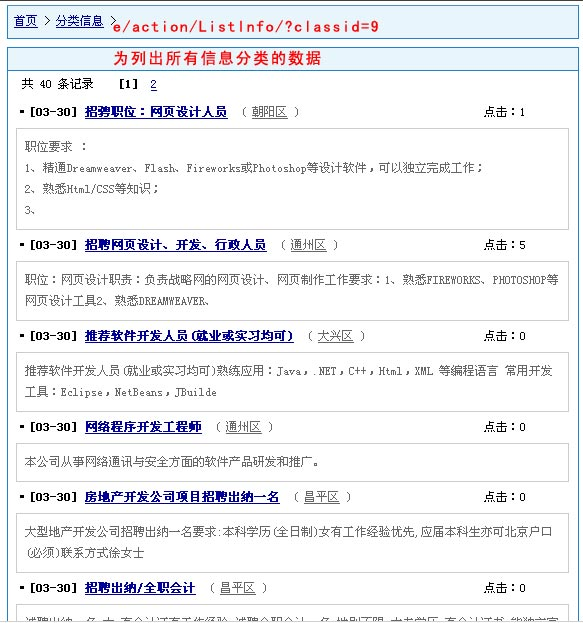
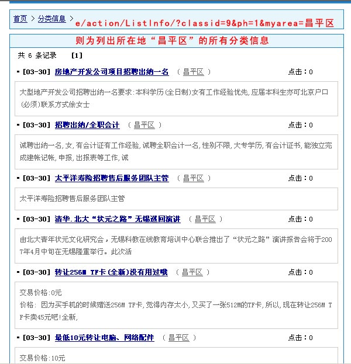
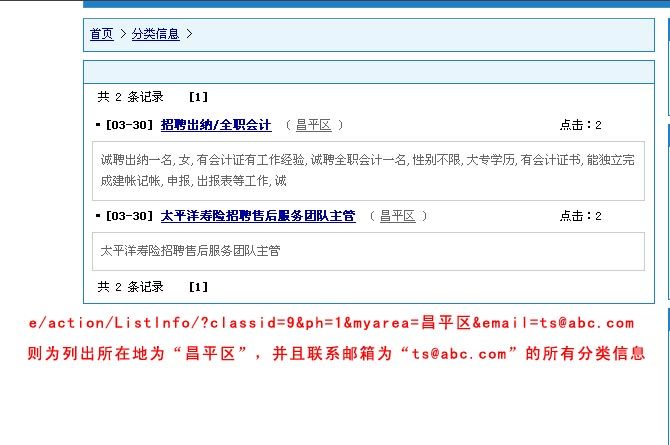

| 一、结合项功能介绍 |
| 为了使信息列表可实现按多种条件输出数据，帝国CMS独创可设置无限条件的模型结合项功能。帝国CMS的结合项功能是指按模型多个字段内容来结合显示对应的信息。 |
| 二、结合项的语法说明 |
| 结合项访问地址： |
| /e/action/ListInfo.php?classid=栏目ID&ph=1&字段名1=值1&字段名2=值2......&字段名N=值N |
| 1、栏目动态列表下使用结合项（有选择列表模板的栏目都可以使用动态列表链接[父栏目与终极栏目均可]）； 2、“ph=1”为声名要使用结合项； 3、“字段名”必须为后台系统模型选择的结合项字段； 4、结合项字段可为数据表的所有字段，并且多个字段之间的关系是“并且(and)”； 5、结合项有两种匹配方式：完全匹配则为值完全相等即可符合；模糊匹配则为包含字符即可符合。 |
| 附加语法说明： |
| 1、列出某一个数据表的所有信息： 指定数据表的系统模型ID即可,模型ID变量名为：mid 例子：下面链接为显示新闻表的所有信息： /e/action/ListInfo.php?mid=1 2、列出多栏目的信息列表： 栏目ID变量名：classid 显示多个栏目可以用逗号格开 例子：下面为显示栏目ID=2的所有信息 /e/action/ListInfo.php?classid=2 3、列出多专题的信息列表： 专题ID变量名：ztid 显示多个专题可以用逗号格开 例子：下面为显示专题ID=1的所有信息 /e/action/ListInfo.php?ztid=1 4、列出标题分类的信息列表： 标题分类ID变量名：ttid 显示多个标题分类可以用逗号格开 例子：下面为显示标题分类ID=1的所有信息 /e/action/ListInfo.php?ttid=1 5、指定显示的列表模板： 列表模板ID变量名：tempid 例子：下面为使用模板ID=1的列表模板 /e/action/ListInfo.php?mid=1&tempid=1 6、指定每页显示记录数： 每页显示记录数变量名：line 不指定为按指定的栏目、专题或者参数设置的每页显示条数 例子：下面为每页显示20条的列表 /e/action/ListInfo.php?mid=1&tempid=1&line=20 7、指定信息发布起始和结束时间范围： 起始时间变量名：starttime ；结束时间变量名：endtime 时间格式：'2009-08-20'，不指定起始时间则表示显示结束时间之前的所有信息 例子：下面为显示2009-08-20当天的信息列表 /e/action/ListInfo.php?mid=1&tempid=1&starttime=2009-08-20&endtime=2009-08-20 8、指定排序字段： 排序字段变量名：orderby ；升降序字段变量：myorder 系统排序字段：newstime,id,onclick,totaldown,plnum 自定义排序字段：系统模型里将字段设置为排序项的字段 myorder=0为降序排序(默认) ；myorder=1为升序排序 例子：下面为按信息点击数(onclick)降序排序 /e/action/ListInfo.php?mid=1&tempid=1&orderby=onclick 9、页面模板支持标签调用与程序代码： 实现动态列表页面效果和静态列表一样； 可接收地址栏变量并输出相应导航等。 10、字段之间的关联逻辑符： 字段之间关联逻辑符变量名：andor 不指定默认为“and”方式。你还可以指定为“or”方式。 例子：下面为显示“title=标题”或者“writer=作者”的列表 /e/action/ListInfo.php?ph=1&mid=1&tempid=1&title=标题&writer=作者&andor=or 11、数字范围比较逻辑运算联结符： 显示数字之间的信息，比较格式：1__2，比较内容之间用两个下划线分隔。(结合项字段的类型要用数字型) 例子：下面为显示价格字段在1~100之间的的信息列表 /e/action/ListInfo.php?mid=1&tempid=1&price=1__100 应用例子： 例1：显示分类信息表所有“朝阳区”地区的信息，地址为如下： /e/action/ListInfo.php?mid=8&tempid=8&ph=1&myarea=朝阳区 例2：显示栏目ID=2并且专题ID=1的信息，地址为如下： /e/action/ListInfo.php?classid=2&ztid=1&tempid=1 例3：显示分类信息表中栏目id=10和17、专题ID=1、标题分类ID=1、发布时间为2009-01-01～2009-08-20、地区为“朝阳区”、联系邮箱为test@phome.net的所有信息，地址为如下： /e/action/ListInfo.php?mid=8&tempid=1&classid=10,17&ztid=1&ttid=1&starttime=2009-01-01&endtime=2009-08-20&ph=1&myarea=朝阳区&email=test@phome.net 其他说明： 使用结合项字段要加ph=1参数 |
| 结合项功能非常实用灵活，更多应用期待您去实践。 |
| 三、使用范例 |
| 以信息分类为例(其它系统模型也是一样的设置)。 |
| 5.1以下版本结合项地址为：/e/action/ListInfo/ 6.0以上版本结合项地址为：/e/action/ListInfo.php |
| 1、如下图中，我们在系统模型中开启了“所在地”与“联系邮箱”为结合项。 |
|  |
| 2、假设“e/action/ListInfo.php?classid=9”显示出的是所有信息分类栏目的数据。 |
|  |
| 列出所在地为“昌平区”的所有信息 |
|  |
| 列出所在地为“昌平区”，并且联系邮箱是“ts@abc.com”的所有信息 |
|  |
| 附加说明：上面举例的是选择完全匹配方式，也可以选择模糊匹配方式，模糊匹配则只要包含字符值即可符合条件。例：“e/action/ListInfo.php?classid=9&ph=1&email=abc.com”就能列出邮箱地址中包含“abc.com”字符的的所有分类信息。 |
| 相关链接 |
| 1、帝国CMS功能解密之：系统模型结合项 |
| 2、帝国CMS功能解密之新版结合项功能 |